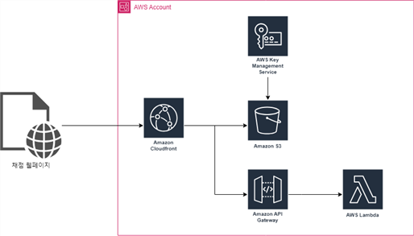
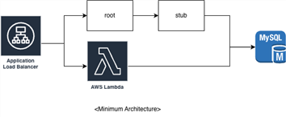

2026년도 전국기능경기대회 과제
1. 요구사항
1) Workflow
2) Real-time data analytics
3) MSK
4) CDN Service Setup
5) Legacy System Operation
2. 선수 유의사항
※ 다음 유의사항을 고려하여 요구사항을 완성하시오.
1) 기계 및 공구 등의 사용 시 안전에 유의하시고, 필요시 안전장비 및 복장 등을
착용하여 사고를 예방하여 주시기 바랍니다.
2) 작업 중 화상, 감전, 찰과상 등 안전사고 예방에 유의하시고, 공구나 작업도구 사용
시 안전보호구 착용 등 안전수칙을 준수하시기 바랍니다.
3) 작업 중 공구의 사용에 주의하고, 안전수칙을 준수하여 사고를 예방하여 주시기
바랍니다.
4) 경기 시작 전 가벼운 스트레칭 등으로 긴장을 풀어주시고, 작업도구의 사용 시 안전에 주의하십시오.
5) 문제에 제시된 괄호 <>는 변수를 뜻함으로 선수가 적절히 변경하여 사용해야 합니다.
6) Security Group의 80/443 outbound는 anyopen하여 사용할 수 있도록 합니다.
7) Bastion EC2는 채점을 위해 사용합니다. 서버들에 접속 문제가 생겨 채점에 불이익을 받지 않도록 합니다.
8) 과제 종료 전 실행 중인 테스트 및 부하를 중지하여 서버에 문제가 없도록 해야 합니 다.
9) Tag 정보가 맞지 않거나 권한 문제가 생겨 채점이 불가하지 않도록 주의합니다.
10) 채점을 위한 Bastion을 생성하고, Bastion은 모든 Resource를 Access 할 수 있어야 합니다.
11 채점지와 문제지 마다 사용하는 Region이 모두 다르니 확인 하도록 합니다.
12. 문제 구성의 핵심을 채점항목에서 확인하지 않고, 정의된 Lambda가 채점지와 다른 부분이 많은 등 문제 오류로 인해 3번 Cloud Event Handling 과제는 삭제합니다.
1) Workflow
개요
S3, Lambda, DynamoDB, Step Functions를 활용하여 학생 성적 데이터를 자동으로 수집, 변환, 저장하는 서버리스 데이터 처리 워크플로우를 구성합니다. Region은 ap-southeast-1을 사용합니다. S3 버킷에 input/test.csv 파일 업로드 시점부터 60초 이내에 워크플로우 실행이 완료되어야 합니다. 워크플로우가 완료되면 DynamoDB 데이터 삽입과 S3 버킷의 processed 폴더와 error 폴더에 Object가 존재하는 상태여야 합니다.
과제 설명
1. S3
학생 성적 원본 데이터를 저장하기 위한 S3 버킷을 구성합니다. 사용자는 학생 이름이 포함된 CSV 파일을 S3에 업로드하며, Step Functions는 해당 파일을 기준으로 워크플로우를 실행합니다. 선수는 대회 종료전 해당 버킷의 데이터를 모두 삭제해야 합니다. 채점 시작시 먼저 해당 버킷의 데이터가 삭제되어 있는지 확인하고, 데이터가 존재한다면 데이터 처리에 대한 채점 항목인 1-1과 1-5, 1-6 는 모두 틀린 것으로 간주합니다. 데이터가 없는게 확인 된다면 채점 시작 시 S3 버킷의 /input/test.csv 경로에 데이터를 업로드 하고 채점을 진행합니다.
● Bucket Name : wsc2026-student-score-bucket-<등번호>
S3 Folder Prefix
2. Lambda
S3에 업로드된 학생 성적 데이터를 읽고, 평균 점수와 등급을 계산한 뒤 DynamoDB에 저장하기 위한 Lambda 함수를 구성합니다. Lambda 함수의 이름은 wsc2026-student-score-function으로 명명합니다. Lambda Function에 대한 세부 사항은 lambda.md를 참고하세요. Lambda 구성 시 아래 환경변수를 구성하도록 합니다. 구성시 Python 버전은 3.12를 사용합니다.
| `S3_BUCKET`| 학생 성적 CSV 파일이 저장된 S3 버킷 이름 |
| `DDB_TABLE`| 처리된 학생 성적 데이터를 저장할 DynamoDB 테이블 이름 |
3. DynamoDB
Lambda에서 처리한 학생 성적 데이터를 저장하기 위한 DynamoDB 테이블을 구성합니다. 채점 시 DynamoDB의 모든 데이터를 삭제해야합니다. 선수는 대회 종료전 해당 테이블의 데이터를 모두 삭제해야 합니다. 채점 시작시 먼저 해당 테이블의 데이터가 삭제되어 있는지 확인하고, 데이터가 존재한다면 데이터 처리에 대한 채점 항목인 1-1과 1-5, 1-6 는 모두 틀린 것으로 간주합니다. 데이터가 없는게 확인 된다면 채점을 진행합니다.
● Table Name : wsc2026-student-score
● Key : (PK : studentId) (SK : examDate)
언급된 PK와 SK외에는 다른 KeyScheme는 구성하지 않습니다.
4. Step Functions
학생 성적 데이터 처리 과정을 오케스트레이션하기 위한 Step Functions State Machine을 구성합니다. Step Functions는 S3 데이터 읽기, 성적 변환, DynamoDB 저장 과정을 순차적으로 실행합니다. Workflow에 대한 자세한 정보는 workflow.md를 참고하세요.
● State Machine Name : wsc2026-student-score-workflow
● State Machine Type : Standard
5. IAM
Lambda와 Step Functions가 S3, DynamoDB에 접근할 수 있도록 IAM Role과 Policy를 구성합니다. IAM Role에는 최소권한을 적용하도록 합니다.
6. Workflow 구성
워크플로우 구성은 아래와 같은 플로우를 참고합니다. S3의 /input 디렉토리에 .csv 파일이 생성될 경우 자동으로 실행되어야 합니다. 자동 실행은 트리거 Lambda를 통해 구현합니다. 워크플로우는 {“key”: “input/test.csv”} 형식 입력을 받습니다.
[Start]
↓
[CheckS3File]
↓
[ProcessStudentData] ← Lambda 호출
↓
[CheckResult] ← Choice
├─ statusCode == 200 → [MoveToProcessed] → [End]
└─ Otherwise → [MoveToError] → [Fail]
2) Real-time data analytics
개요
애플리케이션에서 발생하는 주문 로그 데이터를 기반으로 실시간 데이터 분석 환경을 구성합니다. Region은 ap-northeast-2를 사용합니다.
과제 설명
1. VPC
실시간 분석 시스템 운영을 위한 네트워크를 구성합니다. VPC는 고가용성을 고려하여 구성합니다.
2. EC2
주문 로그를 발생시키는 Python 애플리케이션 서버를 구성합니다. EC2는 Private Subnet A에 배치하며, Load Balancer를 통해서만 외부 접근이 가능하도록 합니다. 애플리케이션에 대한 자세한 설명은 배포파일의 Application.md를 참고하세요. 채점시 SSM을 사용하므로 SSM으로 접근이 가능하도록 구성해야 합니다.
● Instance Name : wsc2026-analytics-ec2
● Instance Type : t3.small
● 애플리케이션은 systemd 서비스로 등록되어야 하며, systemd 서비스 이름은 app으로 명명합니다.
3. Load Balancer
EC2에 대한 외부 트래픽을 처리하는 Application Load Balancer를 구성합니다. ALB를 통해 /health API도 서빙이 되어야 합니다.
● Load Balancer Name : wsc2026-analytics-alb
● Load Balancer Listener : HTTP 80
● Target Group Name : wsc2026-analytics-tg
● Target Group Port 번호 : 5000
4. Kinesis Data Stream
애플리케이션에서 발생하는 주문 로그를 수집하기 위한 Kinesis Data Stream을 구성합니다.
● Stream Name : wsc2026-order-stream
● Capacity Mode : On-demand
● 출력 데이터 샘플
{
"order_id": "uuid",
"product_name": "Laptop",
"price": 1200000,
"quantity": 2,
"event_time": "2026-05-30 12:00:00"
}
5. Managed Apache Flink
Kinesis Data Stream에 수집된 주문 로그를 실시간으로 분석하기 위한 Managed Apache Flink Studio Notebook을 구성합니다. Flink 애플리케이션 프로그래밍은 금지하며, Notebook에서 SQL 언어로 쿼리를 수행합니다.
● Application Name : wsc2026-analytics-flink
● Runtime : Apache Flink 1.19
● 노트북 환경 버전 : ZEPPELIN-FLINK-3_0
Notebook에서 아래 SQL 쿼리가 정상 실행되어야 합니다.
6. IAM
EC2와 Managed Flink가 Kinesis Data Stream에 접근할 수 있도록 IAM Role을 구성합니다. IAM Role에는 최소권한이 적용되어야 합니다.
● EC2 Role : wsc2026-analytics-ec2-role
● Managed Flink Role : wsc2026-analytics-flink-role
3) MSK
개요
Amazon MSK를 활용한 이벤트 스트리밍 파이프라인을 구성합니다. 데이터를 실시간 수집하여 이상치를 감지하고 알림을 발송하는 시스템을 구성합니다. MSK 클러스터는 IAM 인증을 통해서만 접근 가능해야 합니다. Region은 ap-northeast-1을 사용합니다.
1. VPC
MSK 클러스터와 Producer 서버를 위한 네트워크를 구성합니다.
2. MSK
센서 데이터를 스트리밍하기 위한 Amazon MSK 클러스터를 구성합니다. 클러스터는 Private 환경에 구성해야하며 고가용성을 고려해야합니다.
● Cluster Name : wsc2026-msk-cluster
● Kafka Version : 3.6.0
● Broker Instance Type : kafka.t3.small
3. MSK Topic
메시지를 발행하고 Consumer가 구독할 Kafka Topic을 생성합니다.
● PK : sensorId
4. EC2
Producer 애플리케이션을 실행하는 EC2 인스턴스를 구성합니다. EC2는 Private 환경에 구성하며 MSK 클러스터와 통신할 수 있어야 합니다. EC2의 IAM 권한은 최소로 설정해야 합니다. 애플리케이션에 대한 자세한 설명은 배포파일의 Application.md를 참고하세요.
● Instance Tag : Name=wsc2026-sensor-producer
● Instance Type : t3.small
● Role Name : wsc2026-msk-ec2-role
5. Lambda
MSK 토픽에서 메시지를 소비하여 처리하는 Lambda Consumer를 구성합니다. Lambda 함수의 IAM 권한은 최소로 설정해야 합니다. Lambda 함수에 대한 자세한 설명은 배포파일의 lambda.md를 참고하세요.
● Role Name : wsc2026-msk-lambda-role
● Runtime : Python 3.14
● Trigger : MSK
6. DynamoDB
Lambda Consumer가 처리한 센서 데이터를 저장하기 위한 DynamoDB 테이블을 구성합니다. DynamoDB에 timestamp Attribute가 저장될 때 timestamp 값은 ISO 8601 KST 형식 (YYYY-MM-DDTHH:mm:ss±HH:mm)으로 저장될 수 있도록 합니다.
● Table Name : wsc2026-sensor-data
● Key : (PK: sensorId) (SK: timestamp)
7. S3
오류 데이터를 저장하기 위한 S3 버킷을 구성합니다. S3 버킷을 위한 AccessPointAlias는 별도 설정하지 않습니다. awsapi head-bucket 실행시 AccessPointAlias가 false로 출력 되어야합니다.
● Bucket Name : wsc2026-sensor-alert-bucket-<등번호>
4) CDN Service Setup

WSK2026 서비스를 위한 단일 CloudFront 엔드포인트를 구성합니다. 채점 시 해당 엔드포인트로만 요청을 보낼 수 있습니다. Region은 us-east-1을 사용합니다.
채점 웹페이지에 접속 시 선수의 엔드포인트를 입력할 수 있는 칸이 존재합니다. 아래 예시와 같이 엔드포인트와 경로를 입력 후 확인 버튼을 누를 시 선수의 엔드포인트로 요청이 들어갑니다. 해당 요청에 대해 올바른 응답을 반환해야 합니다.
요청 예시
POST <선수 도메인>/now
GET <선수 도메인>/static/image.png
CloudFront 구성
- Comment: wsk2026-cf
- API Gateway Origin
- path: /now
- S3 Origin
- path: /static/*
- OAI를 사용하여 S3 접근 권한 부여
- CachePolicy: CachingOptimized
S3 구성
- Bucket Name: wsk2026-encrypted-data-<등번호>
- KMS encryption 활성화 (Customer Managed Key 사용, DSSE 사용하지 않음)
- 주어진 image.png 파일을 S3 버킷의 /static/ 경로에 업로드 합니다.
- 해당 버킷의 파일들은 빈번한 변경이 일어날 수 있으며, 파일이 업로드 될 시 자동으로 3분 이내에 신규 파일이 브라우저에서 렌더링 되어야 합니다. (AWS 콘솔이 아닌 index.html과 같은 사용자 페이지 의미)
Lambda 구성
CloudFront > API Gateway > Lambda 경로로 호출 시 아래와 같은 형태로 응답을 반환해야 합니다. 단, 여러 번 호출하더라도 실시간으로 현재 시각을 확인할 수 있어야 합니다.
"현재 시각은 2025년 8월 24일 13시 48분 30초입니다."
- API Gateway Name: wsk2026-api
- API Gateway Type: HTTP API
- Lambda Function Name: wsk2026-now
5) Legacy System Operation

당신은 오래된 시스템이 운영되는 한 회사에 DevOps 엔지니어로 입사했습니다. 서비스는 운영되고 있지만 전임자가 떠난 후 시스템에 대한 이력이 거의 없는 상황입니다. 어플리케이션들을 분석해서 곧 사업이 시작되는 eu-central-1 리전에 시스템을 구축하는 것이 당신의 임무입니다. 서버와 DB 등을 설정 후 최종적으로 API가 빠른 시간안에 응답할 수 있도록 구성해야 합니다. 단, 기존 앱은 새로 개발할 수 없습니다.
다음 요구사항이 있습니다.
- 서버 및 데이터베이스를 포함한 인스턴스 유형은 T 계열의 Medium 크기만 사용하는 것을 권장합니다.
- 어플리케이션 구동에 여러 제약조건이 있어 이를 파악하여 root와 stub 어플리케이션을 동작시켜야 합니다.
- 서버 관리에 대한 부담으로 root와 stub은 Fargate 기반 ECS에서 구동될 수 있길 CTO는 희망합니다.
- Aurora MySQL에 데이터를 저장하는 Ingest 앱은 AWS Lambda에 배포되어야 합니다.
- Ingest와 stub, root 어플리케이션은 하나의 Internet-facing ALB로 인터넷에서 접근 가능합니다.
- root와 stub, Ingestion을 통해 제공하는 API 들의 목표 응답시간은 1초 미만입니다.
- stub 앱은 버그가 존재하여 응답이 느린 경우가 잦은데, 전임자가 해결한적 있지만 방법은 기록되어 있지 않습니다.
DB 테이블 스키마
아래 스키마 정보를 참고하여 readings 테이블을 생성합니다.

API 정보
root에서 해당 API를 받으면 stub에서 데이터를 조회하는 API로 자동으로 응답합니다. 다만 root에서 stub으로 호출 시 root 앱 자체가 가지는 타겟에 대한 설정은 포트밖에 없습니다. 앱을 분석하여 root에서 stub으로 정상 호출 되도록 해야 합니다.
어플리케이션 정보
리소스 구성 정보
- ALB Name: shgold-alb (이름과 Name Tag 포함)
- Lambda Function Name: shgold-ingestion (이름과 Name Tag 포함)
- ECS Cluster Name: shgold-cluster (이름과 Name Tag 포함)
- Aurora MySQL Name: shgold-mysql (Identifier와 Name Tag 포함)
- Aurora MySQL Version 8.4.x